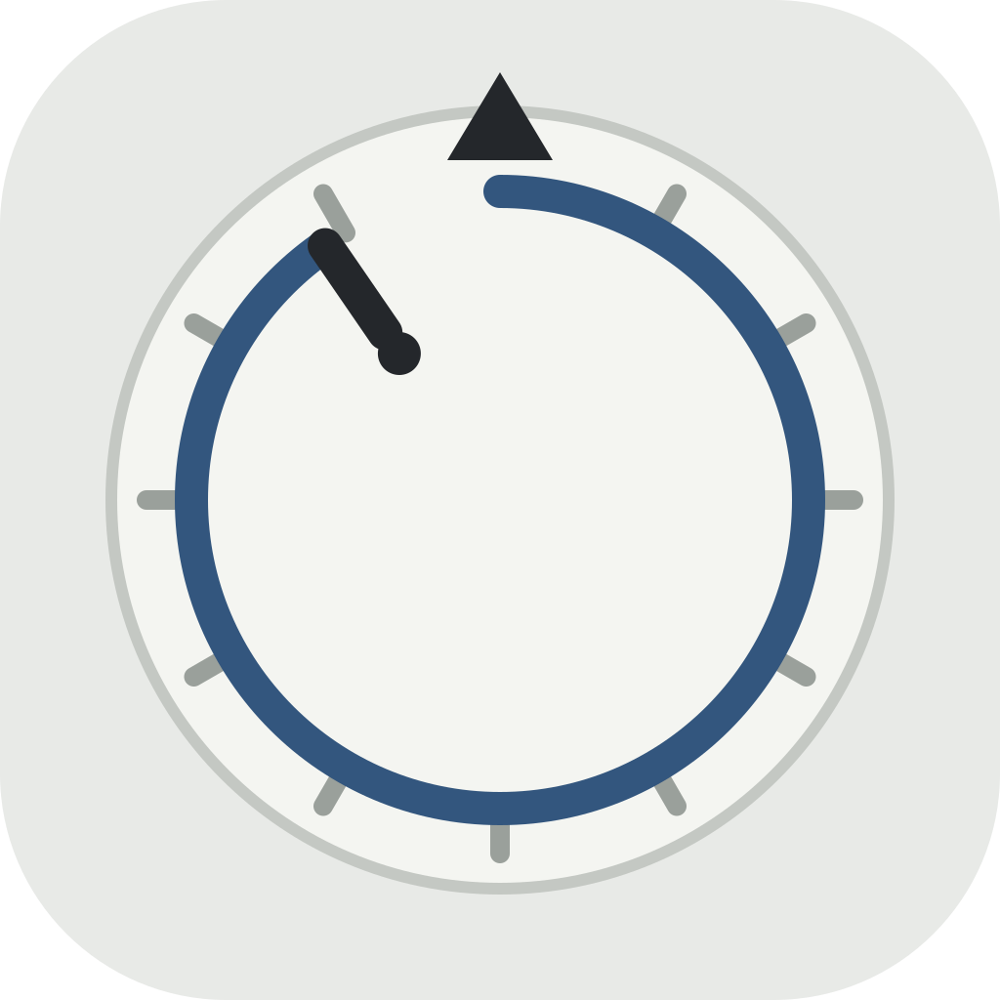
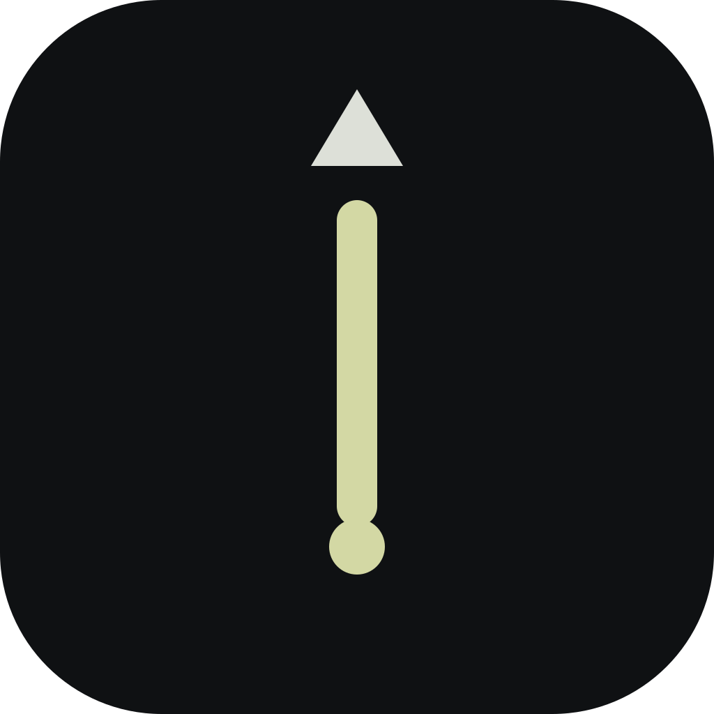

ESCAPEMENT · ROUND 2 · APP ICON — 3 CONCEPTS + BRAND MARKS
Icon — the only visual seen before the product
1 · The Face
The whole grammar: bezel, ticks, index, seated hand, the day's arc. Truest to the product; densest at small sizes.

1024 · 120 · 80 · 40
2 · The Seated Hand
Night field, lume hand seated into its index — the answered moment, reduced to two marks. Reads at any size.

1024 · 120 · 80 · 40
3 · The Remainder
The sweep with its terminal gap and dot — the day not yet closed. Elegant, but nearest to a progress ring.
1024 · 120 · 80 · 40
Recommendation: concept 2, The Seated Hand. At 40px it is the only one still saying something: two marks, full contrast, no mush. Concept 1's minor ticks close up below 80px and the face greys out at 40 — it dies exactly where icons live. Concept 3 survives 40px but reads as a progress ring at a glance — the one association this direction exists to escape (correction 2). Concept 2 is also the only night-field icon in the set, which is honest: the product is opened at night.
BRAND MARKS (docs/BRAND.md carries clear space, minimum sizes, placement law)
Wordmark: SF Pro Display Bold with the index tick seated over the "o" — the one place type carries the horological mark. Used on: App Store, onboarding screen 1, Settings ▸ About. Never inside Today, Calendar or Stats, never on the paywall, never watermarking the record.